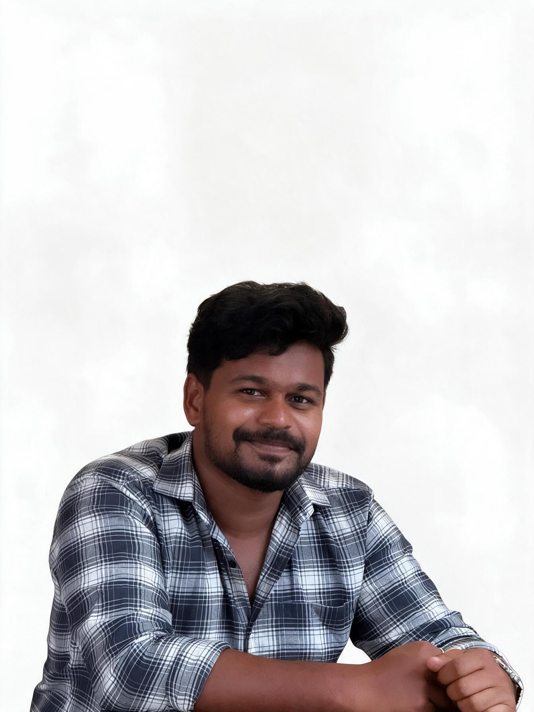

Mechanical Engineer | QA/QC
SPECIFICATIONS

Mechanical Engineer | QA/QC - NDT
B.Tech | Diploma
My journey in Mechanical Engineering began with a curiosity to understand how things work, why they work, and what lies beneath. My early interest in drawing introduced me to precision, accuracy, and design, leading me towards Designing. With time, the principle Prevention is better than cure shifted my focus towards Quality Assurance and Inspection. It was a slow beginning as a NDT Technician, but one that never stopped my progress. Through inspection, I found purpose in examining welds, evaluating material integrity, and ensuring quality and reliability before problems arise. From starting my career in India to gaining industrial exposure in the Kingdom of Saudi Arabia, every experience has shaped me both technically and personally. This journey continues as I keep learning, improving, and moving closer to the engineer I aspire to become.